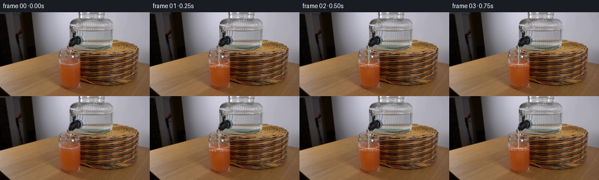
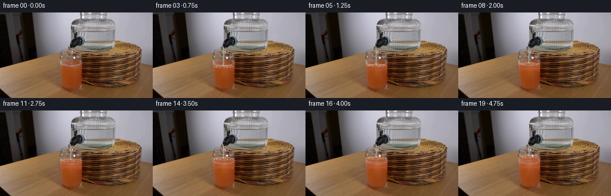
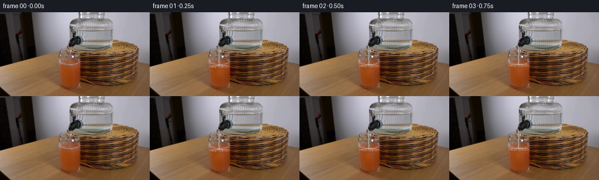
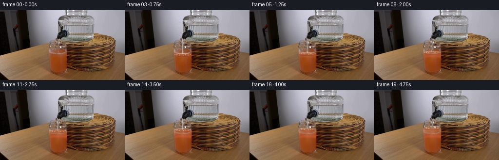
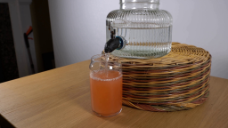
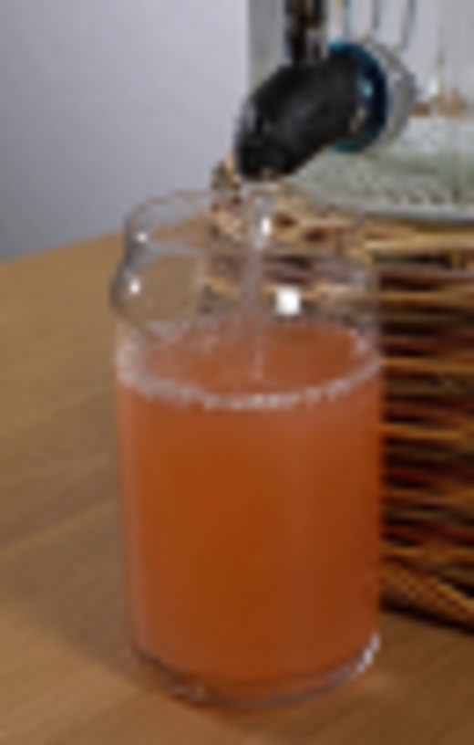
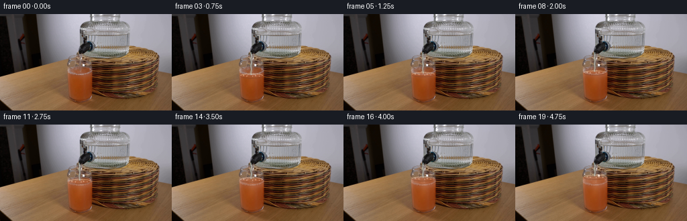
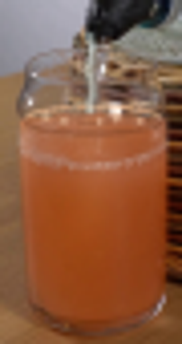
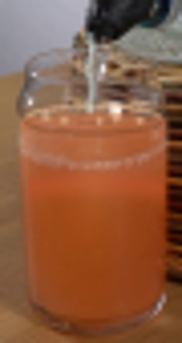

CODING AGENTS AS PIXEL WORLD MODELS
traex/GPT-5.6-Sol · 0186
点击播放 · 原生 RGB 像素
逐轮保存的候选
回放视频、检查图与代码变化。
每份候选均可单独播放。实际图片检查记录在下方工具轨迹中。
候选 01播放与检查图
点击播放 · 原生 RGB 像素


展开代码变化
--- 上一保存版本
+++ 本次保存版本
@@ -0,0 +1,157 @@
+from pathlib import Path
+import math
+import numpy as np
+from PIL import Image, ImageDraw, ImageFilter
+import artifact_io
+
+CASE_DIR = Path(__file__).resolve().parent
+W, H = 256, 144
+S = 4
+
+
+def rgba_layer():
+ return Image.new("RGBA", (W*S, H*S), (0, 0, 0, 0))
+
+
+def composite(base, layer):
+ if layer.size != base.size:
+ layer = layer.resize(base.size, Image.Resampling.LANCZOS)
+ return Image.alpha_composite(base.convert("RGBA"), layer)
+
+
+def liquid_bounds(y):
+ # Inner silhouette of the slightly tapered tumbler.
+ if y < 77:
+ return 102.0 + (y-70)*0.08, 136.0 - (y-70)*0.05
+ if y < 114:
+ return 103.0 + (y-77)*0.035, 135.6 + (y-77)*0.012
+ return 104.3 + (y-114)*0.20, 136.0 - (y-114)*0.24
+
+
+def make_liquid_mask(surface, phase=0.0):
+ """Soft mask for all liquid under a gently curved, moving meniscus."""
+ m = Image.new("L", (W*S, H*S), 0)
+ d = ImageDraw.Draw(m)
+ pts = []
+ # The free surface bows down at the glass wall and has a minute pouring ripple.
+ for k in range(70):
+ x = 101.0 + k * 36.0 / 69.0
+ q = (x-119.0)/18.0
+ yy = surface + 1.65*q*q + 0.20*math.sin((x-104)*0.75 + phase)
+ pts.append((round(x*S), round(yy*S)))
+ # follow right and lower interior, then return along left
+ pts += [(136*S, 116*S), (132*S, 128*S), (109*S, 128*S), (103*S, 116*S)]
+ d.polygon(pts, fill=255)
+ return m.resize((W,H), Image.Resampling.LANCZOS)
+
+
+def colored_fill(frame, original, surface, p, phase):
+ mask = np.asarray(make_liquid_mask(surface, phase), dtype=np.float32)/255.0
+ yy, xx = np.mgrid[0:H, 0:W]
+ # New juice/water mixture. It remains grapefruit-colored, but grows clearer
+ # toward the newly raised surface and around the incoming water.
+ topness = np.clip((99.0-yy)/28.0, 0, 1)
+ target = np.zeros((H,W,3), np.float32)
+ target[...,0] = 190 + 15*topness
+ target[...,1] = 91 + 31*topness
+ target[...,2] = 49 + 26*topness
+ # Added region must be visibly liquid; below the old surface only a subtle
+ # dilution tint is needed because the source photograph already contains juice.
+ added = np.clip((95.0-yy)/max(95.0-surface, 1.0), 0, 1)
+ alpha = mask * (0.18*p + 0.43*added)
+ # Keep original photographic highlights and refractions by color blending.
+ arr = frame.astype(np.float32)
+ arr = arr*(1-alpha[...,None]) + target*alpha[...,None]
+
+ # Soft, pale mixing plume descending from the impact point.
+ plume = np.exp(-((xx-(119.0 + 0.5*math.sin(phase)))**2)/(2*4.0**2)
+ -((yy-(surface+8.0+5.0*p))**2)/(2*(6.0+6*p)**2))
+ plume *= mask * (yy >= surface)
+ pa = plume * (0.12 + 0.07*p)
+ plume_col = np.array([220, 151, 105], np.float32)
+ arr = arr*(1-pa[...,None]) + plume_col*pa[...,None]
+ return np.clip(arr,0,255).astype(np.uint8)
+
+
+def draw_surface_and_stream(frame, surface, idx, p):
+ phase = idx * 1.61
+ base = Image.fromarray(frame).convert("RGBA")
+
+ # Meniscus and little foam pearls, antialiased at 4x resolution.
+ lay = rgba_layer(); d = ImageDraw.Draw(lay)
+ def scbox(b): return tuple(int(round(v*S)) for v in b)
+ # shadow/refracted lower edge and warm illuminated upper edge
+ d.arc(scbox((102.0, surface-1.0, 136.0, surface+5.1)), 2, 178,
+ fill=(120,64,38,120), width=1*S)
+ d.arc(scbox((102.2, surface-2.0, 135.8, surface+4.0)), 181, 358,
+ fill=(245,190,145,175), width=1*S)
+ # ripples localized where water lands
+ ripple_w = 8.0 + 1.1*math.sin(phase)
+ d.arc(scbox((119-ripple_w, surface-0.7, 119+ripple_w, surface+3.0)), 184, 356,
+ fill=(238,183,141,130), width=max(2, int(.7*S)))
+ d.arc(scbox((114.5, surface+0.4, 123.5, surface+2.5)), 5, 176,
+ fill=(108,63,42,90), width=max(2, int(.55*S)))
+
+ # Several bubbles ride the steadily ascending surface. Their positions shift
+ # naturally but stay tiny enough for the source image's scale.
+ bubbles = [(-12.0, .7, 1.0), (-7.0, 1.6, .75), (5.6, 1.0, .85),
+ (11.2, 1.8, .65), (1.8, 2.0, .55)]
+ for j,(dx,dy,r) in enumerate(bubbles):
+ bx = 119 + dx + .35*math.sin(phase*.7+j*1.9)
+ by = surface + dy + .18*math.cos(phase+j)
+ d.ellipse(scbox((bx-r,by-r,bx+r,by+r)),
+ fill=(244,205,171,105), outline=(255,228,202,150), width=max(1,int(.35*S)))
+ lay = lay.resize((W,H), Image.Resampling.LANCZOS)
+ base = Image.alpha_composite(base, lay)
+
+ # Continuous clear-water stream from the black tap to the current liquid
+ # level. Layered edges make it read as transparent rather than white paint.
+ stream = rgba_layer(); sd = ImageDraw.Draw(stream)
+ points=[]
+ y0=57.0
+ steps=max(8,int((surface-y0)*2))
+ for n in range(steps+1):
+ y=y0+(surface-y0)*n/steps
+ x=118.25 + .34*math.sin(phase + n*.31) + .10*(y-y0)/(surface-y0)
+ points.append((int(x*S),int(y*S)))
+ # weak dark refractive edge, broad transparent body, sparkling narrow core
+ sd.line(points, fill=(69,78,69,70), width=3*S, joint="curve")
+ sd.line(points, fill=(183,207,202,115), width=2*S, joint="curve")
+ core=[(x+int(.24*S),y) for x,y in points]
+ sd.line(core, fill=(235,242,232,150), width=max(2,int(.55*S)), joint="curve")
+ # Impact flick and two very short upward splash arcs.
+ ix=118.7 + .25*math.sin(phase)
+ sd.arc(scbox((ix-4.4,surface-3.0,ix+.2,surface+1.6)), 198, 292,
+ fill=(224,232,218,145), width=max(2,int(.65*S)))
+ sd.arc(scbox((ix+.3,surface-2.4,ix+4.5,surface+1.4)), 247, 340,
+ fill=(231,235,219,125), width=max(2,int(.55*S)))
+ if idx % 4 in (1,2):
+ dx = -2.2 if idx%4==1 else 2.4
+ sd.ellipse(scbox((ix+dx-.45,surface-3.5,ix+dx+.45,surface-2.5)),
+ fill=(231,238,226,130))
+ stream = stream.filter(ImageFilter.GaussianBlur(.13*S))
+ stream = stream.resize((W,H), Image.Resampling.LANCZOS)
+ base = Image.alpha_composite(base, stream)
+ return np.asarray(base.convert("RGB"), dtype=np.uint8)
+
+
+def generate():
+ original = np.asarray(Image.open(CASE_DIR / "first_frame.png").convert("RGB"), dtype=np.uint8)
+ frames=[original.copy()]
+ for idx in range(1,20):
+ p=idx/19.0
+ # Near-constant volumetric flow; taper in gently over the first half-second.
+ rise = 17.0 * (0.90*p + 0.10*(1-math.exp(-4*p)))
+ surface = 94.0-rise
+ phase=idx*1.61
+ colored = colored_fill(original.copy(), original, surface, p, phase)
+ frame = draw_surface_and_stream(colored, surface, idx, p)
+ frames.append(frame)
+ frames=np.stack(frames).astype(np.uint8)
+ # Contract-critical exact initial frame.
+ frames[0]=original
+ artifact_io.save(frames, CASE_DIR)
+
+
+if __name__ == "__main__":
+ generate()
候选 02播放与检查图
点击播放 · 原生 RGB 像素


展开代码变化
--- 上一保存版本
+++ 本次保存版本
@@ -58,10 +58,25 @@
# Added region must be visibly liquid; below the old surface only a subtle
# dilution tint is needed because the source photograph already contains juice.
added = np.clip((95.0-yy)/max(95.0-surface, 1.0), 0, 1)
- alpha = mask * (0.18*p + 0.43*added)
+ alpha = mask * (0.16*p + 0.60*added)
# Keep original photographic highlights and refractions by color blending.
arr = frame.astype(np.float32)
arr = arr*(1-alpha[...,None]) + target*alpha[...,None]
+
+ # Once the level has moved away, dissolve the photographed foam ring that
+ # belonged to the initial level. A curved, narrowly localized replacement
+ # retains the glass's side highlights while avoiding an implausible second
+ # stationary waterline in the middle of the drink.
+ q = (xx-119.0)/18.0
+ old_surface = 94.0 + 1.65*q*q
+ erase = np.exp(-((yy-old_surface)**2)/(2*2.15**2))
+ erase *= (xx >= 103) * (xx <= 136) * mask
+ erase *= np.clip((94.0-surface-2.0)/7.0, 0, 1) * 0.70
+ old_col = np.empty_like(arr)
+ old_col[...,0] = 188 + 5*topness
+ old_col[...,1] = 82 + 9*topness
+ old_col[...,2] = 42 + 7*topness
+ arr = arr*(1-erase[...,None]) + old_col*erase[...,None]
# Soft, pale mixing plume descending from the impact point.
plume = np.exp(-((xx-(119.0 + 0.5*math.sin(phase)))**2)/(2*4.0**2)
候选 03播放与检查图
点击播放 · 原生 RGB 像素

展开代码变化
--- 上一保存版本
+++ 本次保存版本
@@ -71,7 +71,7 @@
old_surface = 94.0 + 1.65*q*q
erase = np.exp(-((yy-old_surface)**2)/(2*2.15**2))
erase *= (xx >= 103) * (xx <= 136) * mask
- erase *= np.clip((94.0-surface-2.0)/7.0, 0, 1) * 0.70
+ erase *= np.clip((94.0-surface-2.0)/7.0, 0, 1) * 0.92
old_col = np.empty_like(arr)
old_col[...,0] = 188 + 5*topness
old_col[...,1] = 82 + 9*topness
可观测工具轨迹
实际执行的命令与返回图片。
命令 1exit 0
/bin/bash -lc 'cat prompt.txt'
命令 2exit 0
/bin/bash -lc "cat GENERATION_RULES.md && printf '\\n---FILES---\\n' && find . -maxdepth 2 -type f -printf '%p %s bytes\\n' | sort"
命令 3exit 0
/bin/bash -lc "sed -n '1,240p' artifact_io.py && python - <<'PY'
from PIL import Image
im=Image.open('first_frame.png'); print(im.mode, im.size)
PY"命令 4exit 0
/bin/bash -lc "python - <<'PY'
from PIL import Image
im=Image.open('first_frame.png')
im.crop((85,35,150,137)).resize((520,816)).save('.tmp/crop.png')
PY"命令 5exit 0
/bin/bash -lc "cat > generate.py <<'PY'
from pathlib import Path
import math
import numpy as np
from PIL import Image, ImageDraw, ImageFilter
import artifact_io
CASE_DIR = Path(__file__).resolve().parent
W, H = 256, 144
S = 4
def rgba_layer():
return Image.new(\"RGBA\", (W*S, H*S), (0, 0, 0, 0))
def composite(base, layer):
if layer.size "'!= base.size:
layer = layer.resize(base.size, Image.Resampling.LANCZOS)
return Image.alpha_composite(base.convert("RGBA"), layer)
def liquid_bounds(y):
# Inner silhouette of the slightly tapered tumbler.
if y < 77:
return 102.0 + (y-70)*0.08, 136.0 - (y-70)*0.05
if y < 114:
return 103.0 + (y-77)*0.035, 135.6 + (y-77)*0.012
return 104.3 + (y-114)*0.20, 136.0 - (y-114)*0.24
def make_liquid_mask(surface, phase=0.0):
"""Soft mask for all liquid under a gently curved, moving meniscus."""
m = Image.new("L", (W*S, H*S), 0)
d = ImageDraw.Draw(m)
pts = []
# The free surface bows down at the glass wall and has a minute pouring ripple.
for k in range(70):
x = 101.0 + k * 36.0 / 69.0
q = (x-119.0)/18.0
yy = surface + 1.65*q*q + 0.20*math.sin((x-104)*0.75 + phase)
pts.append((round(x*S), round(yy*S)))
# follow right and lower interior, then return along left
pts += [(136*S, 116*S), (132*S, 128*S), (109*S, 128*S), (103*S, 116*S)]
d.polygon(pts, fill=255)
return m.resize((W,H), Image.Resampling.LANCZOS)
def colored_fill(frame, original, surface, p, phase):
mask = np.asarray(make_liquid_mask(surface, phase), dtype=np.float32)/255.0
yy, xx = np.mgrid[0:H, 0:W]
# New juice/water mixture. It remains grapefruit-colored, but grows clearer
# toward the newly raised surface and around the incoming water.
topness = np.clip((99.0-yy)/28.0, 0, 1)
target = np.zeros((H,W,3), np.float32)
target[...,0] = 190 + 15*topness
target[...,1] = 91 + 31*topness
target[...,2] = 49 + 26*topness
# Added region must be visibly liquid; below the old surface only a subtle
# dilution tint is needed because the source photograph already contains juice.
added = np.clip((95.0-yy)/max(95.0-surface, 1.0), 0, 1)
alpha = mask * (0.18*p + 0.43*added)
# Keep original photographic highlights and refractions by color blending.
arr = frame.astype(np.float32)
arr = arr*(1-alpha[...,None]) + target*alpha[...,None]
# Soft, pale mixing plume descending from the impact point.
plume = np.exp(-((xx-(119.0 + 0.5*math.sin(phase)))**2)/(2*4.0**2)
-((yy-(surface+8.0+5.0*p))**2)/(2*(6.0+6*p)**2))
plume *= mask * (yy >= surface)
pa = plume * (0.12 + 0.07*p)
plume_col = np.array([220, 151, 105], np.float32)
arr = arr*(1-pa[...,None]) + plume_col*pa[...,None]
return np.clip(arr,0,255).astype(np.uint8)
def draw_surface_and_stream(frame, surface, idx, p):
phase = idx * 1.61
base = Image.fromarray(frame).convert("RGBA")
# Meniscus and little foam pearls, antialiased at 4x resolution.
lay = rgba_layer(); d = ImageDraw.Draw(lay)
def scbox(b): return tuple(int(round(v*S)) for v in b)
# shadow/refracted lower edge and warm illuminated upper edge
d.arc(scbox((102.0, surface-1.0, 136.0, surface+5.1)), 2, 178,
fill=(120,64,38,120), width=1*S)
d.arc(scbox((102.2, surface-2.0, 135.8, surface+4.0)), 181, 358,
fill=(245,190,145,175), width=1*S)
# ripples localized where water lands
ripple_w = 8.0 + 1.1*math.sin(phase)
d.arc(scbox((119-ripple_w, surface-0.7, 119+ripple_w, surface+3.0)), 184, 356,
fill=(238,183,141,130), width=max(2, int(.7*S)))
d.arc(scbox((114.5, surface+0.4, 123.5, surface+2.5)), 5, 176,
fill=(108,63,42,90), width=max(2, int(.55*S)))
# Several bubbles ride the steadily ascending surface. Their positions shift
# naturally but stay tiny enough for the source image'"'s scale.
bubbles = [(-12.0, .7, 1.0), (-7.0, 1.6, .75), (5.6, 1.0, .85),
(11.2, 1.8, .65), (1.8, 2.0, .55)]
for j,(dx,dy,r) in enumerate(bubbles):
bx = 119 + dx + .35*math.sin(phase*.7+j*1.9)
by = surface + dy + .18*math.cos(phase+j)
d.ellipse(scbox((bx-r,by-r,bx+r,by+r)),
fill=(244,205,171,105), outline=(255,228,202,150), width=max(1,int(.35*S)))
lay = lay.resize((W,H), Image.Resampling.LANCZOS)
base = Image.alpha_composite(base, lay)
# Continuous clear-water stream from the black tap to the current liquid
# level. Layered edges make it read as transparent rather than white paint.
stream = rgba_layer(); sd = ImageDraw.Draw(stream)
points=[]
y0=57.0
steps=max(8,int((surface-y0)*2))
for n in range(steps+1):
y=y0+(surface-y0)*n/steps
x=118.25 + .34*math.sin(phase + n*.31) + .10*(y-y0)/(surface-y0)
points.append((int(x*S),int(y*S)))
# weak dark refractive edge, broad transparent body, sparkling narrow core
sd.line(points, fill=(69,78,69,70), width=3*S, joint=\"curve\")
sd.line(points, fill=(183,207,202,115), width=2*S, joint=\"curve\")
core=[(x+int(.24*S),y) for x,y in points]
sd.line(core, fill=(235,242,232,150), width=max(2,int(.55*S)), joint=\"curve\")
# Impact flick and two very short upward splash arcs.
ix=118.7 + .25*math.sin(phase)
sd.arc(scbox((ix-4.4,surface-3.0,ix+.2,surface+1.6)), 198, 292,
fill=(224,232,218,145), width=max(2,int(.65*S)))
sd.arc(scbox((ix+.3,surface-2.4,ix+4.5,surface+1.4)), 247, 340,
fill=(231,235,219,125), width=max(2,int(.55*S)))
if idx % 4 in (1,2):
dx = -2.2 if idx%4==1 else 2.4
sd.ellipse(scbox((ix+dx-.45,surface-3.5,ix+dx+.45,surface-2.5)),
fill=(231,238,226,130))
stream = stream.filter(ImageFilter.GaussianBlur(.13*S))
stream = stream.resize((W,H), Image.Resampling.LANCZOS)
base = Image.alpha_composite(base, stream)
return np.asarray(base.convert(\"RGB\"), dtype=np.uint8)
def generate():
original = np.asarray(Image.open(CASE_DIR / \"first_frame.png\").convert(\"RGB\"), dtype=np.uint8)
frames=[original.copy()]
for idx in range(1,20):
p=idx/19.0
# Near-constant volumetric flow; taper in gently over the first half-second.
rise = 17.0 * (0.90*p + 0.10*(1-math.exp(-4*p)))
surface = 94.0-rise
phase=idx*1.61
colored = colored_fill(original.copy(), original, surface, p, phase)
frame = draw_surface_and_stream(colored, surface, idx, p)
frames.append(frame)
frames=np.stack(frames).astype(np.uint8)
# Contract-critical exact initial frame.
frames[0]=original
artifact_io.save(frames, CASE_DIR)
if __name__ == \"__main__\":
generate()
PY
python generate.py
python - <<'PY'
from PIL import Image
import numpy as np
z=np.load('pixels.npz')['pixels']
im=np.array(Image.open('first_frame.png'))
first=np.stack([(z[:,:,0]>>16)&255,(z[:,:,0]>>8)&255,z[:,:,0]&255],-1).astype('uint8')
print('shape',z.shape,'exact',np.array_equal(im,first),'changed final',np.sum(np.any(np.array(Image.open('frames/19.png'))"'!=im,axis=2)))
PY'命令 6exit 0
/bin/bash -lc "python - <<'PY'
from PIL import Image
for i in [0,1,5,10,19]:
im=Image.open(f'frames/{i:02}.png'); im.crop((96,49,141,134)).resize((360,680)).save(f'.tmp/f{i:02}.png')
PY"命令 7exit 0
/bin/bash -lc "python generate.py && python - <<'PY'
from PIL import Image
Image.open('frames/19.png').crop((96,49,141,134)).resize((360,680)).save('.tmp/f19b.png')
PY"命令 8exit 0
/bin/bash -lc "python - <<'PY' from PIL import Image import numpy as np for f in ['first_frame.png','frames/19.png']: a=np.array(Image.open(f)); print(f) for y in range(78,105): print(y, a[y,119].tolist()) PY"
命令 9exit 0
/bin/bash -lc "python generate.py && python - <<'PY'
from PIL import Image
import numpy as np
fs=[]
for i in range(20):
a=np.array(Image.open(f'frames/{i:02d}.png'))
assert a.shape==(144,256,3) and a.dtype==np.uint8
fs.append(a)
print('frames',len(fs),'exact frame00',np.array_equal(fs[0],np.array(Image.open('first_frame.png'))))
print('files',__import__('os').path.getsize('pixels.npz'),__import__('os').path.getsize('index.html'))
PY"视觉工具实际返回图片 1

视觉工具实际返回图片 2

视觉工具实际返回图片 3

视觉工具实际返回图片 4

视觉工具实际返回图片 5

保存候选 3 份；完成命令 9 次；可验证图片返回 5 张。原始 API 响应与完整日志保留在本地。